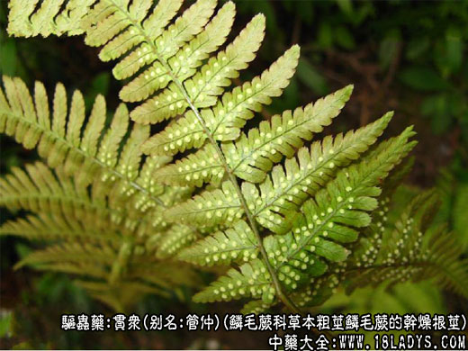
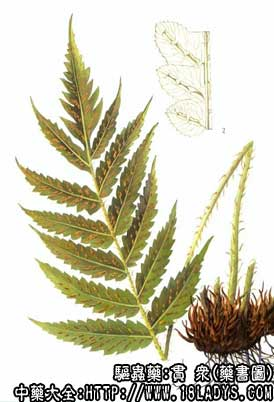

原文连接:https://www.daquan.com/post/2392.html



贯众为较常用中药。始载《神农本草经》，列为下品。贯众属蕨类植物，品类繁多，商品一名多物，按植物划分主要可分为四大类。
1、鳞毛蕨科贯众
别名：管仲。
来源：为鳞毛蕨科多年生宿根草本植物绵马鳞毛蕨（粗茎鳞毛蕨）等的干燥根茎及叶柄残基。野生。
产地：主产于东北地区，此外华北地区也有生产。
性状鉴别：本品呈长圆锥形，上端钝圆或截形，下端渐尖，略弯曲。长约7～20厘米，直径5～8厘米。表面黄棕色或黑棕色，密被排列整齐的叶柄残基及鳞叶，并有线状须根。叶柄残基扁圆柱形，稍弯曲，横断面棕色，有维管束5～7个，黄白色，圆点状，排列成环形。削去叶柄残基可见根基，直径约1～2厘米。质坚硬，不易折断。断面棕色，不平坦，横切面有维管束5～13个排列成环形。气特殊，味淡微涩，后渐苦、辛。
2、蹄盖蕨科贯众
来源：为蹄盖蕨科多年生宿根草本植物蛾眉蕨（亚美蹄盖蕨）等的干燥根茎叶柄残基。野生。
产地：生产于东北、华北以及河南、陕西、四川、云南等地。
性状鉴别：本品呈长卵圆形，上端钝圆，下端较尖，长10～15厘米，直径3～7厘米。表面黑棕色。根茎细长，密被叶柄残基，并有细长弯曲的须根及浅棕色鳞叶。横断面形状不规则，有深黄色点状维管束。叶柄残基上部宽扁，两侧边缘具剌状突起，基部渐细窄多呈菱方形，背部隆起具棱脊，腹面向内凹陷。质硬稍脆，易折断，断面黄棕色，横切面有八字形维管束二条。气微，味微涩。
3、乌毛蕨科贯众
来源：为乌毛蕨科多年生宿根草本植物乌毛蕨等的干燥根茎及叶柄残基。野生。
产地：主产于中南、西南、华东等地区。
性状鉴别：本品呈圆柱形或棱柱形，长10～30厘米，直径4～5厘米。表面棕色或暗棕褐色。叶柄残基甚短或只有空洞样柄痕。鳞叶近顶端较多，棕红色。叶柄痕直径约0.8～1.5厘米。质坚硬，不易折断，断面棕黄色有黑点。叶柄基部横切面有4～5个周韧型的维管束，中间三个类圆形、较小，两侧维管束肾形、较大，木质部的两端呈折叠状弯曲。
4、紫萁科贯众
来源：为紫萁科多年生宿根草本植物紫萁及其变种的干燥根茎及叶柄残基，野生。
产地：主产于中南、华东、西南等地区。
性状鉴别：本品呈圆锥形或三角锥形，稍弯曲，顶端有时有分枝，长10～20厘米，直径4～8厘米。表面棕褐色。根茎上密被斜生叶柄残基，多中空，基部横切面呈新月形或扁圆形，维管束一条呈马蹄铁形，导管群8个半环状排列子韧皮部。气无，味淡。 主要成分：粗茎鳞毛蕨含绵马酸类、鞣质挥发油等。紫萁贯众含甾体类化合物。
药理作用：清热、散瘀、止血，其原理为：
（1）抗病毒：主要对流感病毒有强烈抑制作用；
（2）收缩子宫。动物实验和临床观察都证明贯众煎液和注射有收缩子宫的作用。
以上四种贯众均以个大均匀，色棕红，质坚实者为佳。
炮制：切成碎切，生用或炒炭用。
性味：苦，微寒。
归经：入肝、胃经。
功能：清热散瘀，解毒，杀虫。
主治：热病发斑疹，吐血，衄血，崩漏，便血，赤痢，虫积腹痛等症。
临床应用：
（1）预防流感，单用贯众9g，水煎服，每天一剂，一次服完。
（2）治疗流感，乙型脑炎、病毒性肺炎、流行性腮腺炎等病毒性疾患，用贯众，配大青叶、板蓝根等，有一定疗效，方如抗毒汤。
（3）治疗因子宫收缩无力而致的产后出血。前人已观察到本品能治“崩中带下，产后血气胀痛”，配旱莲草、生地、阿胶等治崩漏不止。现代实验已证明本品确有收缩子宫而止血的作用。近年来，临床试用贯众注射液肌注治疗人工流产和产后出现的流血，效果良好，肌注3～5分钟后原来收缩无力的子宫呈现收缩增强，从而达到止血目的，且无副作用。故贯众可视为中药中的有效宫缩剂。
用量：内服4.5g；肌注每次2毫升（含生药5克）～4毫升。
处方举例：
抗毒汤：贯众9g，大青叶15g，板蓝根15g，紫草根15g，山豆根9g，茵陈9g，桔梗6g，甘草6g，水煎，每日分2～3次服。